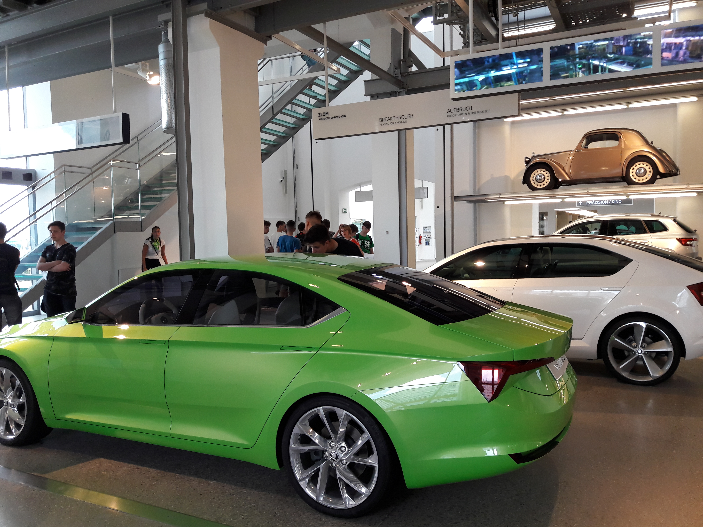

Poznanie Nowoczesnych Technologii
W Elektroniku większą część materiałów odgrywają przedmioty
zawodowe. Wiedza jest głównie oparta o praktykę i doświadczenie
wykładowców. Szkoła jest w stanie zapewnić nauczanie w oparciu o
rynek współczesnych technologii, zarówno w zakresie pisania
stron/aplikacji jak również samego poznania sprzętu.
Solidne Przygotowanie
Szkoła kładzie duży nacisk na jak najlepsze przygotowanie uczniów do
egzaminów zawodowcyh i matur. Dzięki praktycznej możliwości
pozyskania wiedzy, corocznie uczniowie zdają pozytywnie maturę i
otrzymują dyplomy potwierdzające daną kwalifikację w zawodach.
Szerokie Możliwości Pracy
Wybranie naszej szkoły, pozwoli Ci nie tylko na zdaniu matury z
satysfakcjonującym Ciebie wynikiem, ale też umożliwi pozyskanie
kwalifikacji, dzięki czemu znalezienie pracy w zawodzie nie będzie
już stanowiło problemu. Współczesny rynek pracy i pracodawcy w
dziedzinie IT wymagają przedewszystkim doświadczenia i praktyki, co
w naszej szkole można się nauczyć i pozyskać.

W Elektroniku edukacja nie opiera się, tylko na nauczaniu w sposób
stacjonarny. Nauczyciele często organizują wiele wyjść do kin lub
teatrów. Kilka razy w roku przygotowywany jest większy wyjazd w ramach
edukacyjnego poznania przyszłego zawodu przez uczniów. Takim niedawnym
przedsięwzięciem był wyjazd uczniów wraz z opiekunami do Muzeum Skody
w Czechach. Uczniowie bardzo chętnie uczestniczyli w zwiedzaniu
fabryki i miło ten wyjazd wspominają.